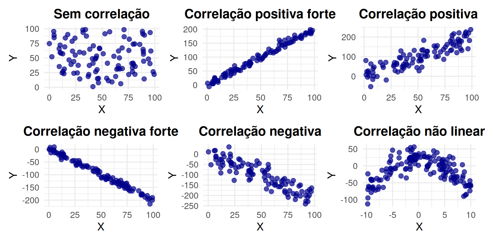

Correlação
ESTAT0011 – Estatística Aplicada
Prof. Dr. Sadraque E. F. Lucena
sadraquelucena@academico.ufs.br
Entendendo Relações entre Variáveis
Existem situações nas quais temos interesse em estudar como duas ou mais variáveis se comportam em conjunto. Por exemplo:
A relação entre o peso e a altura de uma pessoa.
A conexão entre o preço de um produto e sua demanda.
Para analisar essas relações, focaremos em duas técnicas principais, intimamente ligadas:
Correlação: Resume o grau e a direção do relacionamento linear entre duas variáveis (como \(X\) e \(Y\)).
Regressão: Fornece uma equação matemática que descreve o relacionamento entre as variáveis, permitindo previsões.
Correlação
Objetivo: Determinar (mensurar) o grau e a direção do relacionamento linear entre duas variáveis quantitativas.
Observação Importante! É crucial ressaltar que a correlação indica uma associação numérica, e não implica, necessariamente, uma relação de causa-e-efeito.
Exemplo: O aumento nas vendas de sorvete e o aumento no número de afogamentos são correlacionados (ambos aumentam no verão), mas um não causa o outro.
O comportamento conjunto de duas variáveis quantitativas pode ser observado por meio do gráfico de dispersão. Ele nos ajuda a identificar visualmente se existe um padrão na relação entre as variáveis.
Gráfico de Dispersão
Coeficiente de Correlação Linear de Pearson
- Uma medida fundamental para quantificar o grau e o sinal da correlação linear entre duas variáveis (\(X\) e \(Y\)) é o Coeficiente de Correlação Linear de Pearson.
- Para um conjunto de \(n\) observações pareadas \(\{(x_1,y_1),\ldots,(x_n,y_n)\}\), onde \(\overline{x}\) e \(\overline{y}\) representam as médias amostrais de \(X\) e \(Y\) respectivamente, o coeficiente de correlação de Pearson é definido como \[ r_{xy} = \frac{\sum_{i=1}^n x_i y_i - n\overline{x}\overline{y}}{\sqrt{\sum_{i=1}^n x_i^2 - n\overline{x}^2}\sqrt{\sum_{i=1}^n y_i^2 - n\overline{y}^2}} \]
Interpretando o valor de \(r_{xy}\)
O valor do coeficiente de correlação de Pearson (\(r_{xy}\)) sempre estará entre -1 e +1:
- \(r_{xy} = +1\): Indica uma correlação linear positiva perfeita. À medida que \(X\) aumenta, \(Y\) aumenta proporcionalmente.
- \(r_{xy} = -1\): Indica uma correlação linear negativa perfeita. À medida que \(X\) aumenta, \(Y\) diminui proporcionalmente.
- \(r_{xy} = 0\): Sugere ausência de correlação linear. Não há uma relação linear discernível entre \(X\) e \(Y\).
- \(0<r<1\): correlação linear positiva.
- \(-1<r<0\): correlação linear negativa.
Exemplo 5.1
Uma empresa de TI investiu pesadamente em programas de treinamento para seus desenvolvedores. Após um ano, foi observado que o coeficiente de correlação entre horas de treinamento e produtividade foi de +0,75. A partir desses dados, podemos inferir com segurança que o treinamento causa o aumento da produtividade?
Não. Uma correlação forte (+0,75) indica apenas uma forte relação linear positiva, mas não prova causalidade, pois podem haver:
Fatores de Confundimento: Outras variáveis (ex: experiência prévia, motivação da equipe, qualidade da gestão, novas ferramentas) também podem influenciar a produtividade.
Desenho do Estudo: Para confirmar a causalidade seria necessário realizar um experimento controlado randomizado, onde a atribuição ao treinamento é aleatória, para isolar seu efeito.
Exemplo 5.2
Em uma pesquisa ampla sobre saúde e bem-estar, foi calculada a correlação entre o peso corporal (em kg) e a renda mensal (em salários mínimos) de uma amostra de indivíduos adultos, que foi próximo de zero (r≈0). Isso significa que não há nenhum tipo de relação entre essas variáveis?
**Não. Uma correlação de Pearson próxima de zero indica ausência de relação linear. Isso não exclui outras possibilidades:
- Relação não linear: Os dados podem seguir um padrão curvilíneo (não uma linha reta). É necessário olhar o gráfico de dispersão.
- Relações mediadas: Outros fatores (ex: hábitos alimentares, acesso à saúde) podem influenciar ambas as variáveis, sem uma relação linear direta entre peso e renda.
Ou seja, não há uma tendência evidente de uma variável influenciar diretamente na outra, mas outras formas de conexão podem existir.
Exemplo 5.3
Um pesquisador coletou dados sobre o tempo diário de uso de redes sociais (em horas) e o nível de ansiedade (em uma escala de 0 a 10) de adolescentes. Se ele encontrar uma correlação de Pearson de +0,95, o que você esperaria ver em um gráfico de dispersão desses dados?
Um \(r\) = +0,95 indica uma correlação linear positiva extremamente forte.
No gráfico de dispersão, você veria os pontos formando uma linha reta ascendente muito compacta e coesa. Isso significa que, à medida que o tempo de uso das redes sociais aumenta, o nível de ansiedade também aumenta de forma quase perfeitamente linear e previsível, com pouquíssima dispersão dos pontos em relação a essa tendência.
Exemplo 5.4
Um time de desenvolvimento de software lançou uma nova versão de um sistema de gerenciamento de projetos e deseja avaliar se existe uma relação linear entre a eficiência de uso (medida pelo tempo médio para completar uma tarefa específica, em segundos, X) e a satisfação do usuário (em uma escala de 1 a 10, onde 10 é máxima satisfação, Y).
Foram coletados dados de 9 usuários selecionados aleatoriamente:
| X | 45 | 60 | 30 | 75 | 50 | 40 | 80 | 55 | 65 |
| Y | 8 | 6 | 9 | 5 | 7 | 8 | 4 | 6 | 5 |
Calcule o Coeficiente de Correlação Linear de Pearson (\(r_{xy}\)) para os dados acima.
O que esse valor sugere sobre a relação entre o tempo de conclusão da tarefa e o nível de satisfação do usuário?
Fim